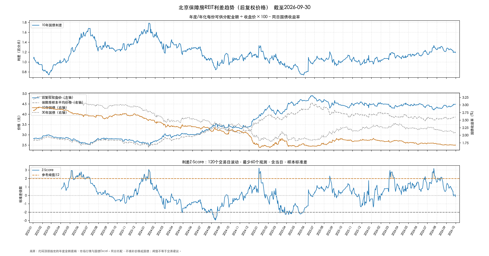
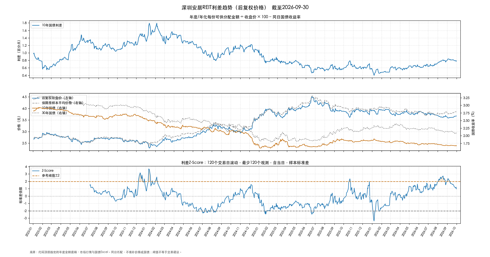
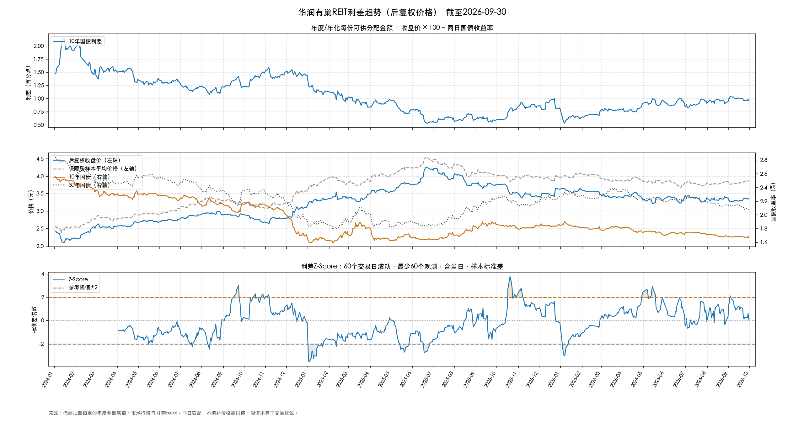
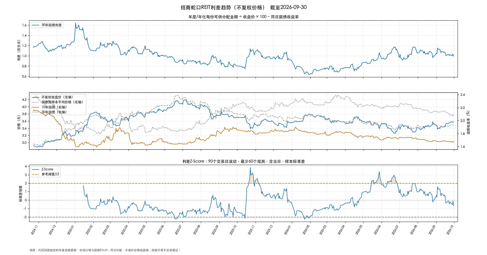
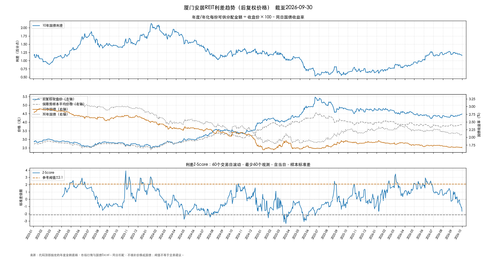
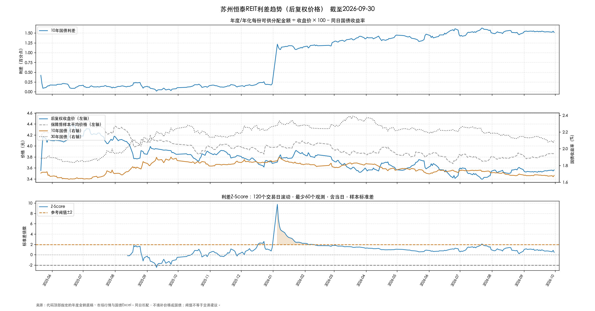
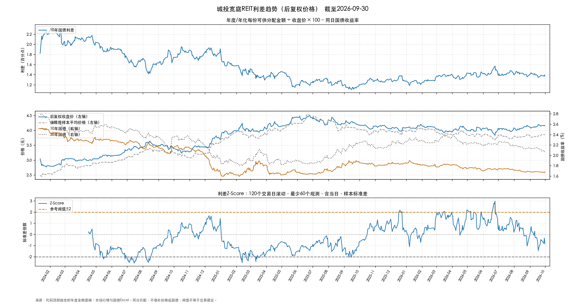

北京保障房
508068.SH · 后复权价格 · 10年国债 · 120个交易日滚动
图表缩放下载 PNG ↓


点击缩放按钮后可滚动查看细节；手机上也可打开原图，用双指放大。
03 / HOUSING REIT SPREAD
逐只查看利差、价格、国债收益率及滚动Z-Score。
508068.SH · 后复权价格 · 10年国债 · 120个交易日滚动

点击缩放按钮后可滚动查看细节；手机上也可打开原图，用双指放大。
180501.SZ · 后复权价格 · 10年国债 · 120个交易日滚动

点击缩放按钮后可滚动查看细节；手机上也可打开原图，用双指放大。
508077.SH · 后复权价格 · 10年国债 · 60个交易日滚动

点击缩放按钮后可滚动查看细节；手机上也可打开原图，用双指放大。
180502.SZ · 未复权价格 · 30年国债 · 90个交易日滚动

点击缩放按钮后可滚动查看细节；手机上也可打开原图，用双指放大。
508058.SH · 后复权价格 · 10年国债 · 60个交易日滚动

点击缩放按钮后可滚动查看细节；手机上也可打开原图，用双指放大。
508085.SH · 后复权价格 · 10年国债 · 120个交易日滚动

点击缩放按钮后可滚动查看细节；手机上也可打开原图，用双指放大。
508031.SH · 后复权价格 · 10年国债 · 120个交易日滚动

点击缩放按钮后可滚动查看细节；手机上也可打开原图，用双指放大。